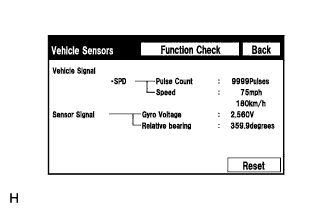

СИСТЕМА НАВИГАЦИИ (для моделей с DVD) > ПРОВЕРКА РАБОТЫ СИСТЕМЫ |
| ПРОВЕРЬТЕ НОРМАЛЬНОЕ СОСТОЯНИЕ СИСТЕМЫ |
Если один из следующих случаев является причиной признака неисправности, это не является причиной неисправности.
| Признак | Пояснение |
| Выбран более длинный маршрут, чем ожидалось | В зависимости от дорожных условий дисплей модуля системы навигации и индикации может установить, что более длинный маршрут будет пройден быстрее |
| Даже если приоритет расстояния высок, более короткий маршрут не отображается | Некоторые маршруты не рекомендуются по соображениям безопасности |
| Когда автомобиль начинает движение сразу после запуска двигателя, данные системы навигации немного отклоняются от фактического положения | Если двигатель запускается до активации системы навигации, система может не отреагировать |
| При движении по некоторым дорогам, в частности, по новым дорогам, местоположение автомобиля на карте отличается от фактического положения | При движении автомобиля по новым дорогам, отсутствующим на диске с картой, система пытается соотнести положение автомобиля с другой ближайшей к нему дорогой, что и приводит к отклонению метки на карте |
Следующие признаки не являются неисправностью, но вызваны ошибками, характерными для GPS, гиродатчика, датчика скорости или дисплея модуля системы навигации и индикации.
Метка текущего положения может отображаться на ближайшей параллельной дороге.
Сразу после проезда развилки на дороге метка текущего положения автомобиля может отображаться не на той дороге.
Когда автомобиль поворачивает на перекрестке направо или налево, метка текущего положения автомобиля может находиться на ближайшей параллельной дороге.
При транспортировке автомобиля, например на пароме, когда автомобиль неподвижен, метка текущего положения может отображаться в месте, где автомобиль находился ранее, пока GPS не сможет определить его новое положение.
При движении автомобиля вверх по крутому склону метка текущего положения автомобиля может отклоняться от фактического местонахождения.
Когда автомобиль делает непрерывный поворот (например, на 360, 720 или 1080 град.), метка текущего положения автомобиля может отклоняться от фактического местонахождения.
При хаотичном движении автомобиля, например при частых перестроениях из ряда в ряд, метка текущего положения автомобиля может отклоняться от фактического местонахождения.
Перед заездом на автостоянку, когда автомобиль находится на поворотной платформе, и зажигание включено (ACC или ON (ВКЛ)), метка текущего положения автомобиля может указывать неверное направление. То же самое относится к выезду автомобиля с крытой автостоянки.
При движении по заснеженным или горным дорогам с установленными на шины цепями или при использовании запасного колеса, метка текущего положения автомобиля может отклоняться от фактического местонахождения.
При замене шин метка текущего положения автомобиля может отклоняться от фактического местонахождения.
| ПРОВЕРЬТЕ ПЕРЕКЛЮЧАТЕЛИ НА ПАНЕЛИ И РУЛЕВОМ КОЛЕСЕ |
Войдите в режим диагностики (Нажмите здесь).
 |
На экране "Service Menu" (сервисное меню) выберите "Function Check/Setting" (проверка/настройка функций).
Выберите "Panel & Steering Switch" (переключатели на панели и рулевом колесе) на экране "Function Check/Setting" (проверка/настройка функций).
Режим проверки переключателей на панели и рулевом колесе
 |
Нажмите на каждый переключатель и проверьте, правильно ли отображается его название и состояние.
| Дисплей | Описание |
| *1: Название нажимного переключателя |
|
| *2: Название поворотного переключателя | Отображается название поворотного переключателя |
| *3: Направление поворотного переключателя | Отображается направление поворотного переключателя |
| ПРОВЕРЬТЕ СЕНСОРНЫЙ ПЕРЕКЛЮЧАТЕЛЬ |
Войдите в режим диагностики (Нажмите здесь).
|
На экране "Service Menu" (сервисное меню) выберите "Function Check/Setting" (проверка/настройка функций).
Выберите "Touch Switch" (сенсорный переключатель) на экране "Function Check/Setting" (проверка/настройка функций).
Проверка сенсорных переключателей
Для проверки коснитесь любой точки открытой области дисплея при отображении окна "Touch Switch Check" (проверка сенсорного переключателя).
| ПРОВЕРКА МИКРОФОНА И РАСПОЗНАВАНИЯ ГОЛОСА |
Войдите в режим диагностики (Нажмите здесь).
|
На экране "Service Menu" (сервисное меню) выберите "Function Check/Setting" (проверка/настройка функций).
Выберите "Mic & Voice Recognition" (микрофон и распознавание голоса) на экране "Function Check/Setting" (проверка/настройка функций).
Проверка микрофона и распознавания голоса
Говоря в микрофон, убедитесь, что индикатор входного уровня микрофона изменяется в соответствии с голосовым сигналом.
Нажмите на переключатель записи и запишите голосовую информацию.
Убедитесь, что индикатор записи остается включенным во время записи, и записанный голос воспроизводится нормально.
| *a | Индикатор входного уровня микрофона |
| *b | Переключатель "запись" |
| *c | Переключатель "стоп" |
| *d | Переключатель "воспроизведение" |
| *e | Индикатор записи |
| ПРОВЕРКА ЦВЕТОВЫХ ПОЛОС |
Войдите в режим диагностики (Нажмите здесь).
|
На экране "Service Menu" (сервисное меню) выберите "Function Check/Setting" (проверка/настройка функций).
Выберите "Color Bar" в меню "Function Check/Setting".
Режим проверки цветовых полос
 |
Выберите цветовую полосу из меню "Color Bar Check Mode" (режим проверки цветовых полос).
Проверьте отображенный цвет.
| ПРОВЕРЬТЕ GPS И ДАТЧИКИ АВТОМОБИЛЯ |
Войдите в режим диагностики (Нажмите здесь).
|
На экране "Service Menu" (сервисное меню) выберите "Function Check/Setting" (проверка/настройка функций).
Выберите "GPS & Vehicle Sensors" (GPS и датчики автомобиля) на экране "Function Check/Setting" (проверка/настройка функций).
Информация GPS
При отображении информации системы GPS проверьте условия GPS.
Выберите "Sensors Check" (проверка датчиков) на экране "GPS Information" (информация GPS).
Датчики автомобиля
|  |
Проверьте все сигналы и датчики во время отображения информации о сигналах автомобиля.
| ПРОВЕРЬТЕ СИГНАЛ АВТОМОБИЛЯ |
Войдите в режим диагностики (Нажмите здесь).
|
На экране "Service Menu" (сервисное меню) выберите "Function Check/Setting" (проверка/настройка функций).
Выберите "Vehicle Signal Check" (проверка сигналов автомобиля) на экране "Function Check/Setting".
Режим проверки сигналов автомобиля
 |
Во время отображения окна "Vehicle Signal Check Mode" (режим проверки сигналов автомобиля) проверьте состояние сигналов от всех датчиков автомобиля.
| ПРОВЕРЬТЕ УСТАНОВКИ ГРОМКОСТИ СИСТЕМЫ ГРОМКОЙ СВЯЗИ |
Войдите в режим диагностики (Нажмите здесь).
|
На экране "Service Menu" (сервисное меню) выберите "Function Check/Setting" (проверка/настройка функций).
Выберите "Hands-free Volume Setting" (установки громкости системы громкой связи) на экране "Function Check/Setting".
Установки громкости системы громкой связи
 |
Проверьте уровень громкости системы громкой связи.
| Дисплей | Описание |
| *1: регулировка уровня громкости входящей голосовой информации | Настройка доступна для уровня громкости голосовой информации, полученной от телефонов с поддержкой технологии Bluetooth |